September 2023 - present, Summer 2021, Summer 2020
Onshape is a cutting edge cloud-based CAD software.
I am currently a senior software engineer on Onshape's Data Management team. Prior to joining full time, I interned as a user experience intern and then as a software engineering intern.
In my current role I work fullstack. I use typescript, Angular, and HTML/CSS/LESS to develop front end features and make API calls. On the back end, I use Java and MongoDB to develop and maintain REST API endpoints, optimize database queries, and manage data. I am very comfortable specifically in the area between the front and the back end, and managing how they interact. In addition, I work with the support team to troubleshoot and solve user tickets.
During my UX internship I identified key elements from user feature requests, then used Figma to create mockups and test them on real Onshape users. I iterated on the mockups based on the feedback and handed the designs off to a developer to implement. I wrote an article about my experience and my thoughts on UX design. Read it here.
During my software engineering internship I worked on the data management team. I worked with Java, HTML, CSS, and Typescript to fix bugs and implement new features. I learned to debug and collaborate with Git in a large code base, write production quality code, and submit and contribute to code reviews.
December 2021 - December 2022
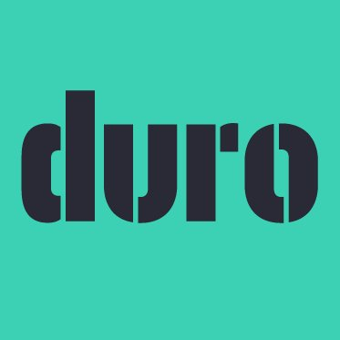
Duro Labs is a cloud-based Product Lifecycle Management company
I worked at Duro as a user experience and graphic design consultant.
I designed, mocked up, and user-tested new features and feature improvements. My work was primarily done in Sketch, using Sketch Cloud for revision control. I also worked with the developers to resolve any UX questions that come up and to manually QA the feature once finished. In addition, I did graphic design and icon design to ensure a cohesive, professional look across the product.
Summer 2022
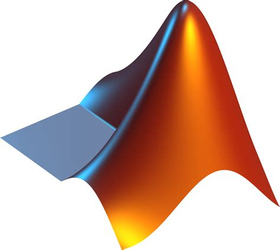
MathWorks develops software for scientists and engineers. Their products include MATLAB and Simulink.
I worked at MathWorks as a QA intern on the MATLAB online team. I refactored performance tests measuring metrics like load time and sign in time to improve efficiency. I built a dashboard to analyze and display those metrics for the team to quickly access test results.
January 2022 - June 2022
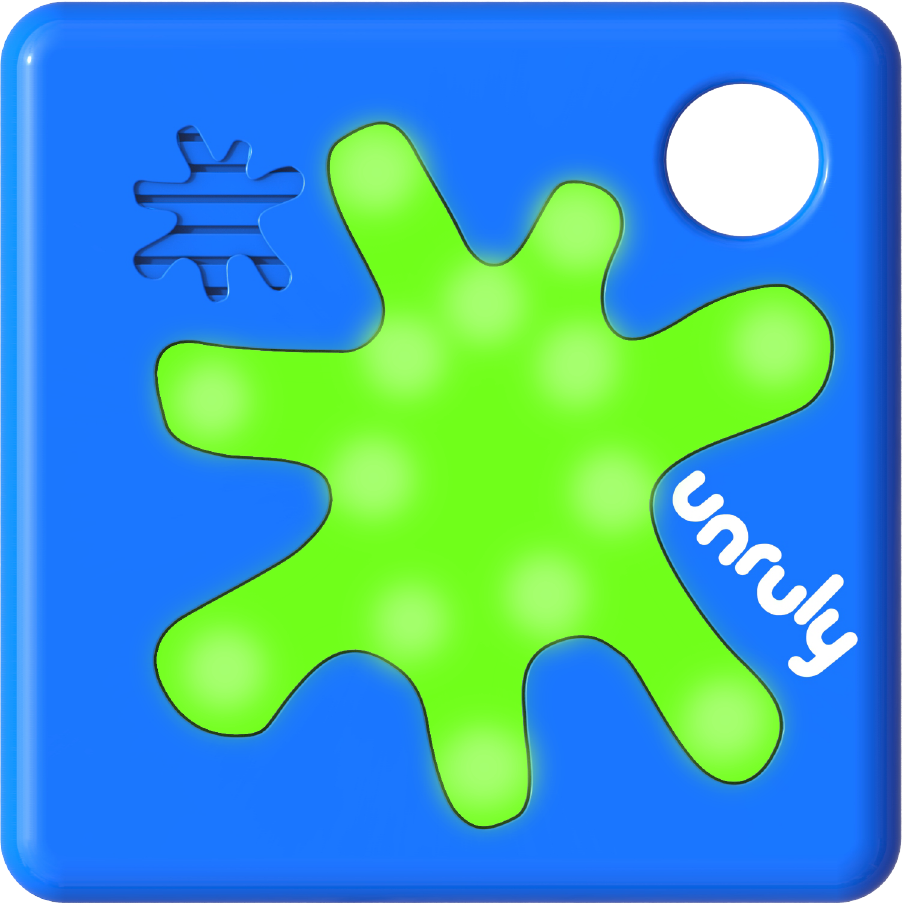
Unruly Splats is an educational company bringing STEM education to children through a combination of programming and physical interactive play.
I worked as a consultant for Unruly Splats to develop a plan to make the sit accessible for blind and low vision users. I researched screen reader best practices, how other groups had adapted similar applications, and delved into the Unruly app to determine the current state of accessibility. I created mockups and compiled my research and recommendations into a report which can be found here.
Summer 2019
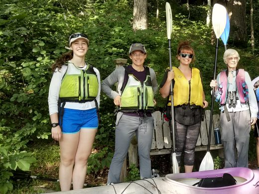
Ipswich River Watershed Association (IRWA) is an organization that seeks to protect the Ipswich River through legislation, conservation, and education.
I worked at IRWA during the summer of 2019 as an education apprentice. I visited summer camps and educational groups, leading paddles on the Ipswich River and teaching about water conservation. I developed educational resources about the river and went to community events to talk to people about where their water comes from, the importance of conserving it, and the dangers of stormwater runoff.
In my spare time, I worked on developing the organization’s new website and updating resources to make water quality information more accessible to the public.
Summer 2018
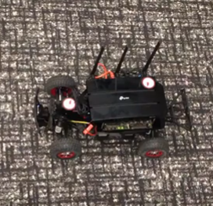
Analog Devices is an electronics company that develops chips and sensors.
During the summer of 2018 I worked as a robotics intern at Analog Devices, building RC cars to use as testbeds for developing autonomous vehicle sensors. My job was primarily adapting the hardware and electrical systems to optimize the car for office testing. I designed circuits to integrate the components, CADed the structural housing in Onshape, and wrote Python scripts to interact with the Robot Operating System (ROS).
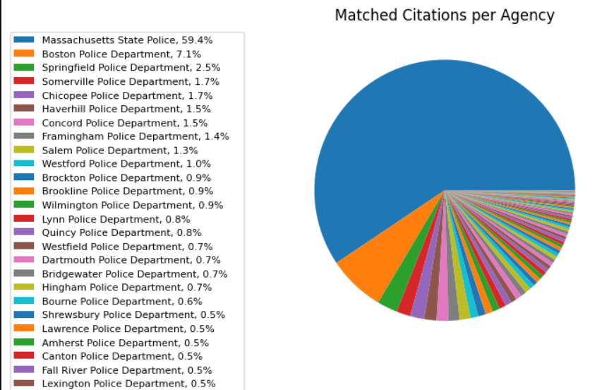
A tool for public defenders to generate statistical analyses of racial profiling in police traffic stops.
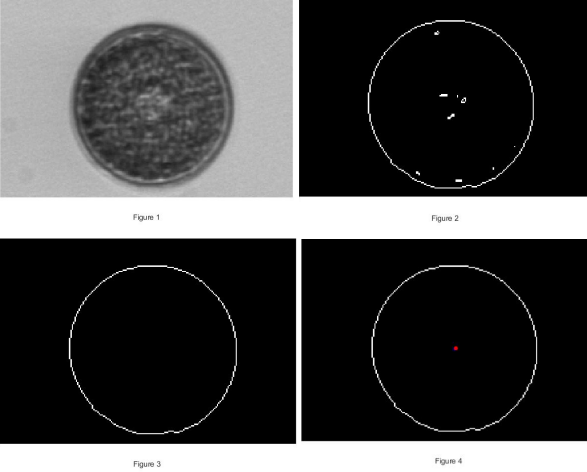
An algorithm bult in MATLAB that uses PCA to identify plankton species.
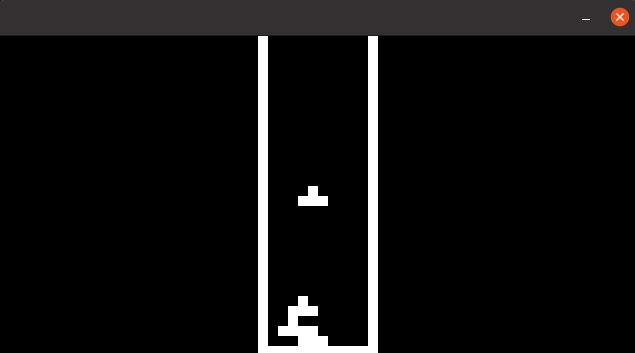
A CHIP-8 emulator I built from scratch in C that can run 8-bit games.
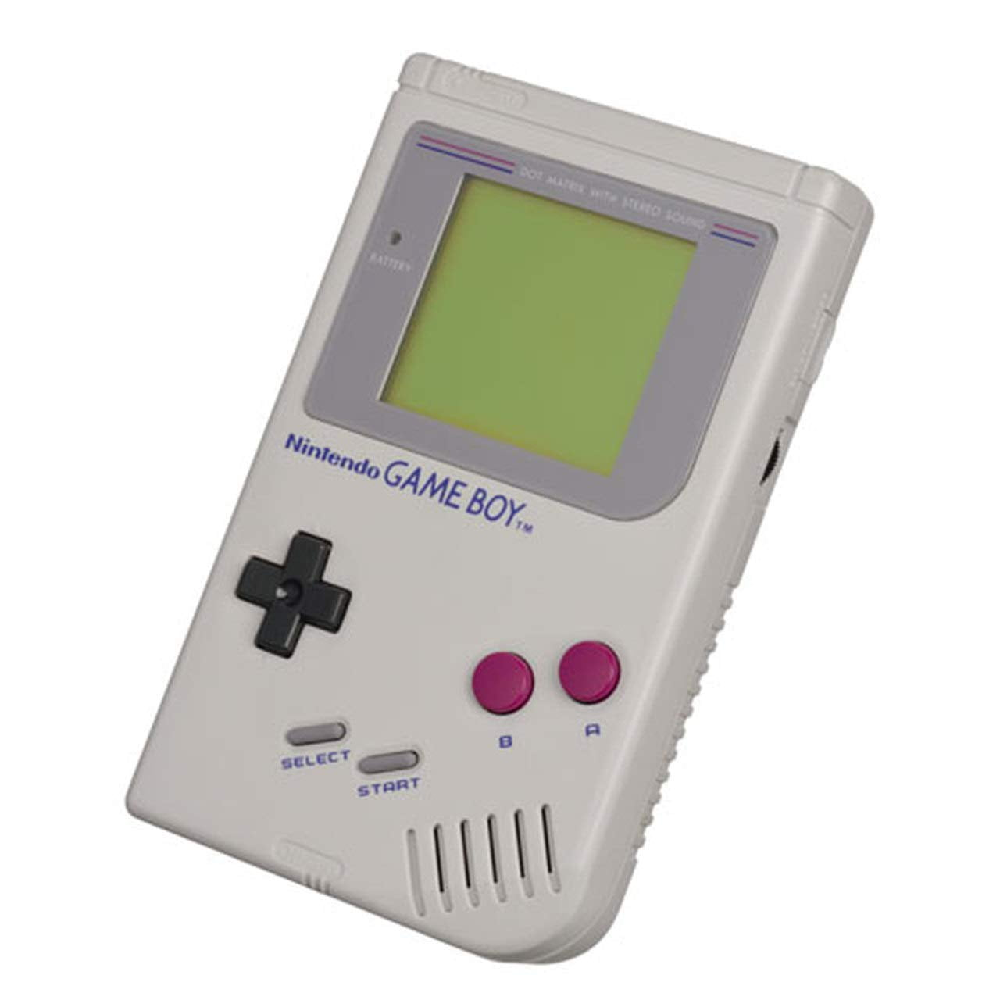
A partial GameBoy emulator written in C++.
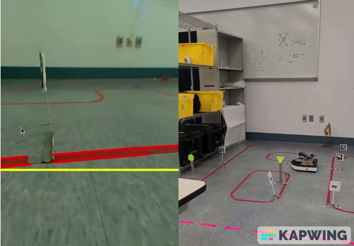
A project to path plan and navigate a Neato robot autonomously through a course of signs and April tags, using ROS 2.
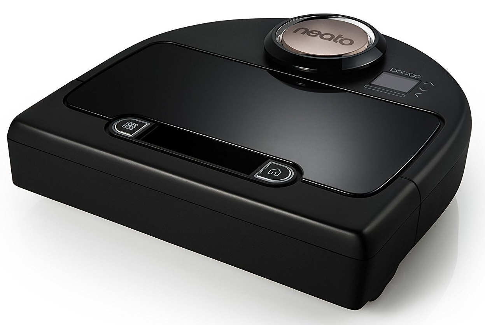
A project to localize and drive a Neato robot in ROS 2 using LIDAR scans and odometry.
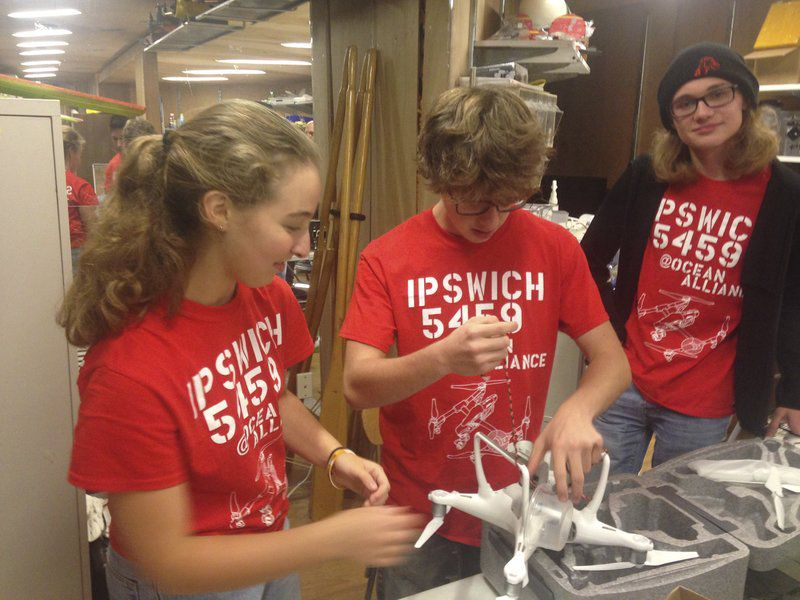
A device assisting the Snotbot pilot when flying over whale spray.